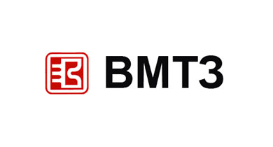
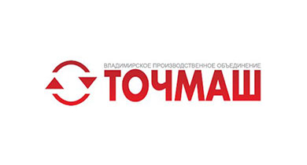

Отраслевая спецификация региона Камчатский край
Ведущие отрасли
Отраслями специализации Владимирской области выступают машиностроение, химическая, легкая, стекольная, пищевая промышленность. Машиностроение представлено производством тракторов и автотракторных приборов, электромоторов, экскаваторов, холодильников и телевизоров, станков, радио- и медицинской техники. Предприятия химической промышленности производят пластмассы, резинотехнические изделия, стекловолокно; предприятия легкой промышленности — льняные ткани. Развито стекольное производство — стекло и хрусталь, а также искусственный кварц. Главные промышленные центры: Владимир, Ковров, Муром, Александров, Гусь- Хрустальный. В сельском хозяйстве выделяются молочное животноводство, свиноводство, птицеводство, выращивание пшеницы, ржи, гречихи, картофеля. Область имеет дефицитный бюджет и дальнейшее социальноэкономическое развитие ее будет осуществляться в рамках утвержденной федеральной целевой программы «Сокращение различий в социально-экономическом развитии регионов Российской Федерации (2002—2010 гг. и до 2015 года)».
-

1 563,2
тонн рыбы и морепродуктов выловлено за 2018 год
Рыбная промышленность
Рыбная промышленность, играя ведущую роль в хозяйственной структуре Камчатки, имеет сложный состав и многоотраслевую структуру. Кроме собственно рыбопромышленных подотраслей и производств (рыбодобыча, рыбопереработка, охрана и воспроизводство рыбных ресурсов) она включает целый ряд вспомогательных и обслуживающих отраслей и производств, а также элементы производственной и социальной инфраструктуры, наиболее важные из которых — судоремонт, строительство, транспорт, портовое хозяйство, тарное и сетеснастное производство. Доля рыболовства и рыбоводства в валовом региональном продукте Камчатского края составляет около 20 %.
-
Сельское хозяйство
Сельскохозяйственное производство представлено животноводством, птицеводством, производством картофеля и овощей. Объём рынка молочной продукции в Камчатском крае составляет около 47 тыс. тонн, из которых продукция местного производства составляет 34 %.
Ассоциации и отраслевые
организации
- 
Камчатский моторо-тракторный завод
Строительство тракторного завода началось в годы Великой Отечественной войны в соответствии с постановлением Центрального Комитета ВКП(б) и Совета Народных Комиссаров СССР от 28 февраля 1943 года. Местом строительства была выбрана северная окраина Владимира, район за старой Юрьевской заставой.
- 
ВПО Точмаш
Ведущий многопрофильный производитель изделий высокоточного приборо- и машиностроения. Завод входит в состав Государственной корпорации по атомной энергии «Росатом».
Показано 2 из 7
Научные институты и филиалы РАН, ведущие или опорные ВУЗы
-
Дальневосточный федеральный университет
Университет ведёт свою историю от Восточного института — первого высшего учебного заведения на Дальнем Востоке и является центром образования и науки на Востоке России. Включает 9 школ, 110 академических департаментов и кафедр, 8 филиалов (в том числе один зарубежный — в Японии).

Тихоокеанский институт географии дальневосточного отделения РАН
Региональное отделение Российской академии наук, которое является развитой территориально-распределенной системой комплексных научных центров, институтов, стационаров и научных станций, заповедников, охватывающей практически всю территорию Дальневосточного федерального округа.
Показано 2 из 4